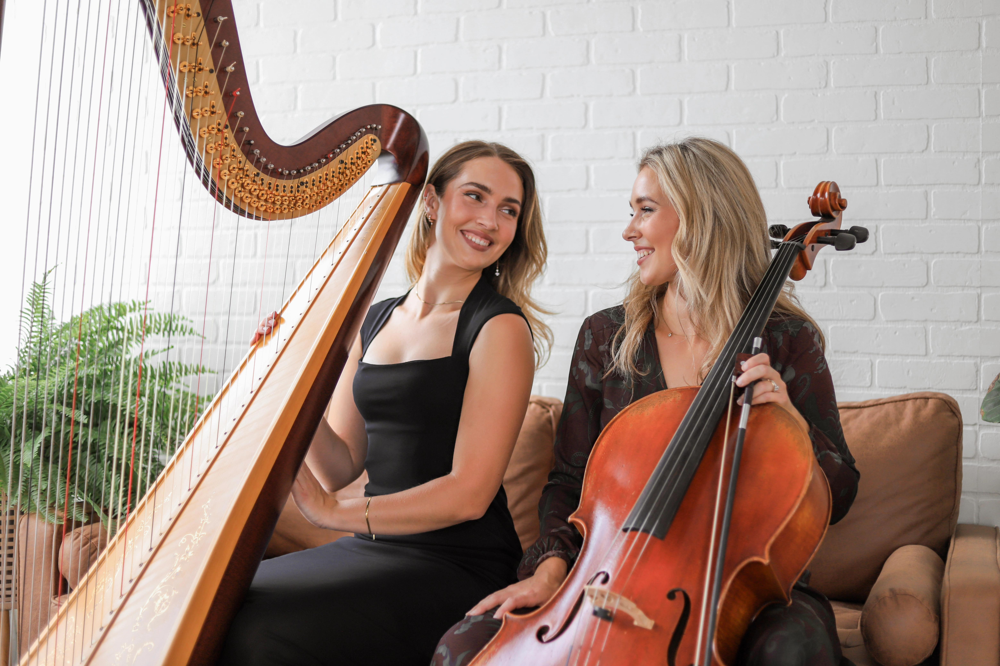
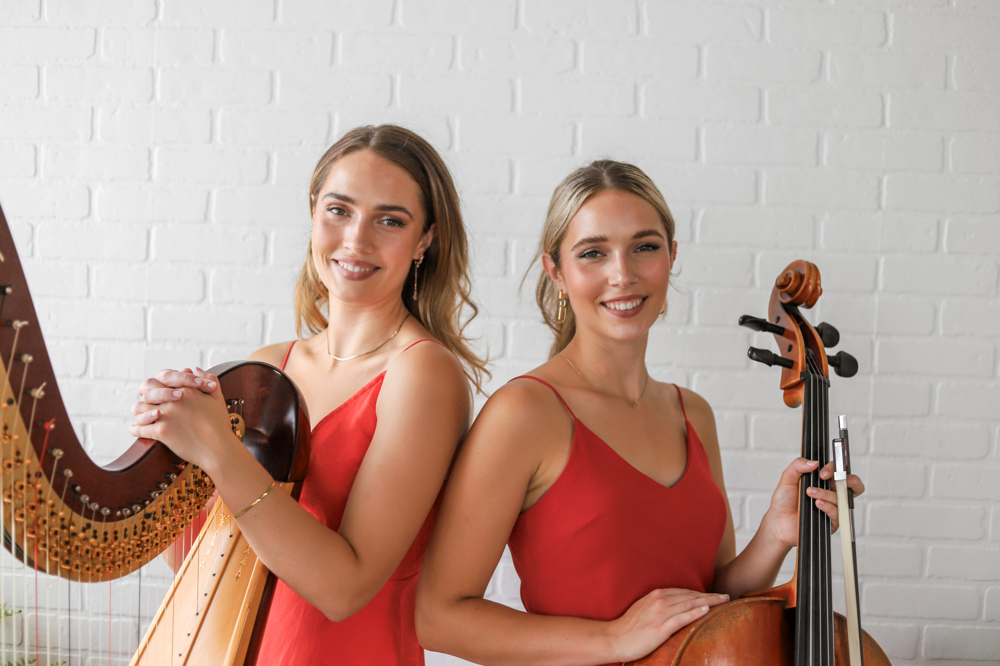
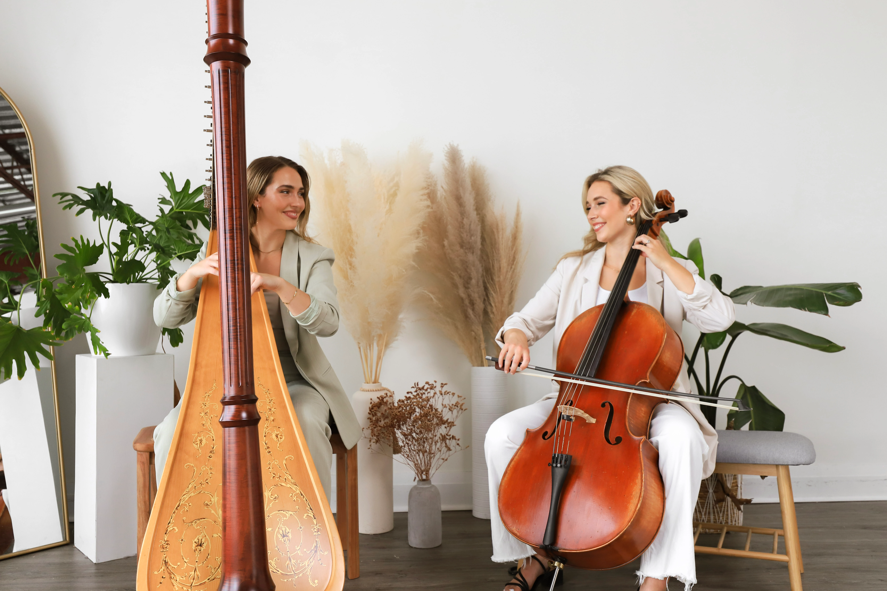

Harp & Cello Duo
The StringSisters
Thoughtfully performed live music to create a beautiful atmosphere for every special occasion.
Inquire About Booking & AvailabilityLive music for weddings, anniversaries, birthdays, celebrations of life, engagement parties, corporate events, cocktail hours, vow renewals, bridal showers, holiday parties, galas & fundraisers, private dinners, graduations, and milestone celebrations of every kind.
In Their Words
They read the room perfectly — soft and unobtrusive during dinner, then somehow had the whole tent singing by the last song.
Every guest asked who was playing. The cocktail hour arrangements felt like they were written just for us.
Professional from the first email to the last note. Exactly the tone we wanted for a room full of clients.
FAQ
Yes — we build a custom repertoire around the music you love, alongside our arranged catalogue for ceremony and cocktail hour.
Very little. An area roughly six by six feet keeps both instruments comfortable, indoors or out.
We're based in Toronto and travel throughout the GTA and beyond for the right occasion.